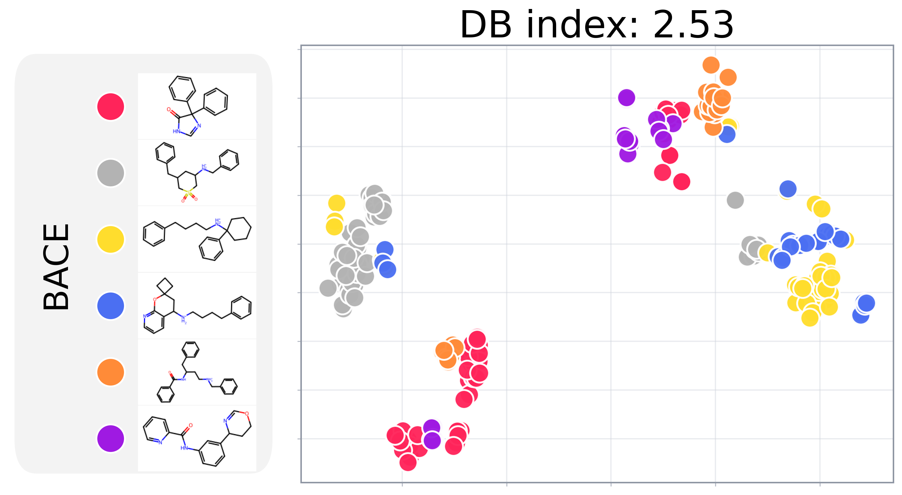

A static front-end page for the MotiL scaffold visualization tool. Users can prepare their own molecular dataset CSV and pretrained checkpoint, set a few plotting parameters, and copy the exact local command needed to generate a scaffold-colored t-SNE figure and coordinate table.

.csv.smiles.Class..pkl or .pt.torch.load(..., map_location="cpu").encoder.W_i_atom.weight.*_scaffold_tsne.png — the scaffold-colored t-SNE figure.*_scaffold_tsne.csv — the coordinate table.smilesscaffoldtsne_xtsne_ytargetsmiles.